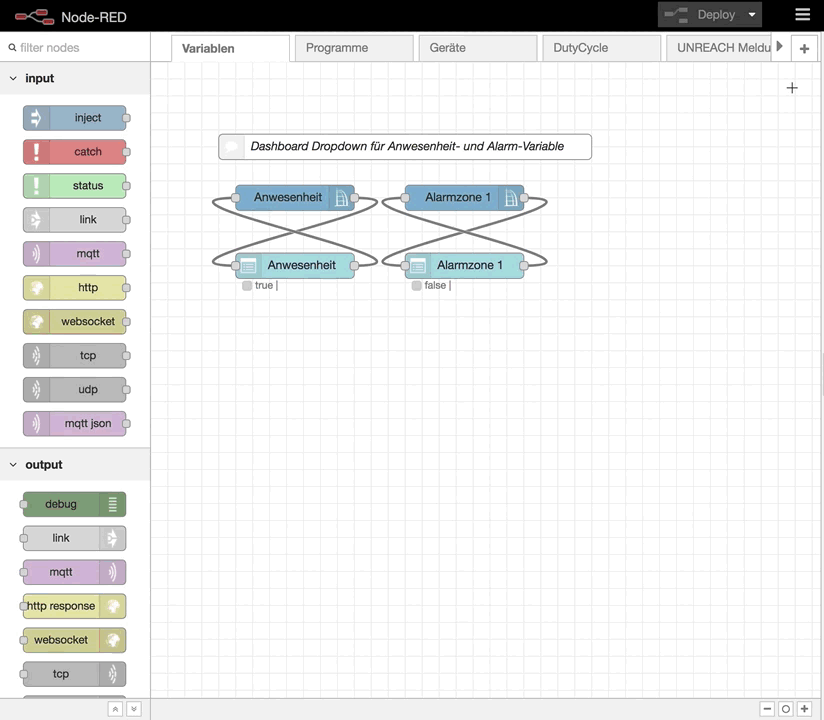
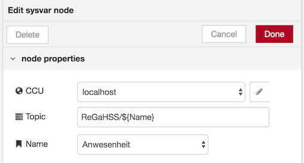

CCU Nodes
ccu connection node
Im Connection Node wird die Verbindung zu den CCU Schnittstellenprozessen und zur Logikschicht verwaltet. Der Connection Node ist ein sogenannter Configuration Node, ist nicht in der Palette sichtbar und kann nicht in einem Flow platziert werden. Seine Konfiguration ist im Menü unter Configuration Nodes erreichbar:

Attribute
CCU Name
Frei wählbarer Name für die aktuelle CCU-Konfiguration.
Er dient zur Unterscheidung falls mehrere CCUs an RedMatic angebunden werden und erscheint in allen anderen CCU Nodes.
CCU Address
Die IP-Adresse oder der Hostname der CCU.
Wird RedMatic als CCU-Addon installiert, läuft es auf dem selben Device weshalb
die Loopback-Adresse localhost bzw. 127.0.0.1 gewählt werden kann.
Listen Address
Die IP-Adresse des Netzwerk-Interfaces auf welchem die RedMatic RPC Server "lauschen" sollen.
Läuft RedMatic auf der CCU wird hier ebenfalls localhost bzw. 127.0.0.1 verwendet.
Um auf allen Interfaces zu lauschen kann 0.0.0.0 verwendet werden.
Init Address
Die Init-Adresse wird den CCU-Schnittstellenprozessen für RPC-Callbacks mitgeilt. Läuft RedMatic auf der CCU ist
ebenfalls localhost bzw. 127.0.0.1 zu verwenden.
BIN-RPC Port
Der Port des RedMatic BIN-RPC Dienstes an den die CCU Events schickt. Werden Verbindungen zu mehreren CCUs hergestellt (mehrere ccu-configuration Node Instanzen) braucht jede Verbindung einen exklusiven Port.
XML-RPC Port
Der Port des RedMatic XML-RPC Dienstes an den die CCU Events schickt. Werden Verbindungen zu mehreren CCUs hergestellt braucht jede Verbindung einen exklusiven Port.
Interfaces
Hier können die zu verwendenden Schnittstellen angegeben werden. Nutzt man Beispielsweise keinen CUxD oder HmIP Geräte, kann der Haken entfernt werden was die entsprechenden ungenutzten Komponenten deaktiviert.
- ReGaHSS: Die Logikschicht der CCU, verwaltet CCU-Programme und CCU-Systemvariablen
- BidCos-RF: Homematic Funk
- BidCos-Wired: Homematic Wired
- HmIP-RF: Homematic-IP Funk
- VirtualDevices: Heizungsgruppen, in CCU eingebundene Systeme wie Osram Lightify
- CUxD
RPC Ping-Timeout
Zeitinterval in Sekunden in dem die Verbindung zu den Schnittstellenprozessen geprüft wird.
ReGaHSS Polling
Änderungen von CCU-Systemvariablen werden nicht automatisch an RedMatic übermittelt. Mit aktiviertem Polling fragt RedMatic die Variablen und deren Werte in den per Poll-Interval eingestellten Zeitintervallen ab.
ReGaHSS Poll-Interval
Das Zeitintervall in Sekunden um die Systemvariablen von der CCU zu lesen.
Context-Store
Hier wird der Node-RED Context-Store festgelegt in dem RedMatic die Zustände aller Geräte/Variablen vorhält.
Weiteres unter Working with context in der Node-RED Dokumentation.
ccu value node
Geräte steuern und/oder Events von einem Gerät empfangen.
Attribute
CCU
Die zu verwendende CCU-Konfiguration.
Topic
Das Topic ist an MQTT angelehnt und dient zu späteren Identifizierung des Werts.
Interface
Hier wird das Interface gewählt, welches den gewünschten Datenpunkt enthält.
Channel
Der Kanal dessen Datenpunkte verwendet werden solln. Er besteht aus der Serien- sowie der Kanalnummer. Eine Autovervollständigung hilft bei der Auswahl anhand der Klarnamen.
Datapoint
Der Datenpunkt des Kanals, auch hier wird über eine Autovervollständigung die Auswahl vereinfacht.
ON_TIME
Zeit in Sekunden nach der ein Schaltaktor/Dimmer nach dem anschalten wieder ausgeschaltet werden soll.
Dabei ist:
undefined: Keine automatische Ausschaltungnumber: Eine feste Verzögerung in Sekundenglobal,flow: Eine Verzögerung aus einer Context-Variablenmsg: Eine Verzögerung aus einemmsg-Property.
set Mode
Eine Erweiterung für Geräte, die sowohl den rx_mode BURST als auch WAKEUP unterstützen wie z.B.: Batterie-Schaltaktoren oder Rauchmelder mit Sirenenfunktion. Mit dem Parameter kann in diesem Fall angegeben werden, ob der übergebene Wert über BURST oder WAKEUP übertragen werden soll.
- WAKEUP: Überträgt den Wert sobald der entsprechende Empfänger aufacht.
- BURST: Versucht alle BURST-Empfänger für die Übertragung aufzuwecken was sich negativ auf den DutyCycle und die Batterielaufzeit aller Burst-Empfänger auswirkt.
Flags
Nur geänderte Werte ausgeben Ein Event wird nur dann erzeugt, wenn sich der Wert seit dem letztn Event verändert hat.
Während WORKING keine Werte ausgeben Es gibt Aktoren, z.B. Dimmer oder Rolladen, die während einer Rampe (Öffnen/Schließen eines Rollladen, Dimmen einer Lampe) fortwährend den aktuellen Zustand ausgeben. Um nur den End-Status auszugeben kann diese Option benutzt werden. Gebräuchlich auch bei Verwendung mit Dashboard-Nodes um "springende" Slider zu verhindern.
Beim Start letzten bekannten Wert ausgeben Wenn Node-RED gestartet wird, dann wird der letzte Wert (sofern in der ReGaHSS bekannt) ausgegeben. Z.B. um beim Start einen korrekten Wert an das Dashboard zu übergeben. Achtung: Wird durch die ausgegebene Nachricht im weiteren Verlauf des Flows ein Homematic Wert gesetzt wirkt sich jedes (Full-)Deployment negativ auf den DutyCycle aus.
Name
Der Name dient zur Beschriftung des Node im Flow.
Input
Für den Input des Value Node wird msg.payload als der Wert verwendet der in den Datenpunkt geschrieben wird.
Die Bestimmung des Datenpunkts sowie des Kanals und der Schnittstellen können hier dynamisch
sein. Dazu werden die entsprechenden Node-Attribute leer gelassen und über msg gesetzt.
Option 1:
Interface, Channel und Datapoint können in der msg als Properties angegeben werden:
{
"interface": "BidCos-RF",
"channel": "OEQ1868878:1",
"datapoint": "STATE",
"payload": true
}
2
3
4
5
6
Option 2:
Der Datenpunkt kann über msg.topic angegeben werden wobei die Werte mit Punkt getrennt werden:
{
"topic": "BidCos-RF.OEQ1868878:1.STATE",
"payload": true
}
2
3
4
Output
Der Value Node gibt nur Events aus, wenn Interface, Channel und Datapoint gesetzt sind.
ccu rpc event node
Der rpc event Node erzeugt eine Nachricht, wenn ein Event von der CCU empfangen wird. Im Gegensatz zum value node, welcher nur auf einen spezifischen Datepunkt reagiert, wird der rpc event Node bei allen CCU-Events getriggert.
Um eine Nachricht nur bei bestimmten Events zu erzeugen verfügt er über diverse Filtermöglichkeiten. Die meisten Filter können explizit gesetzt werden z.B. Arbeitszimmer Taster AN oder gegen einen regulären Ausdruck geprüft werden. Ein Beispiel für ein RegEx Pattern das auf alle Taster zutrifft wäre .*Taster.*. Um zwischen explizit (String) und RegEx zu wählen wird das DropDown neben der Werteingabe verwendet.
Output
Die msg enthält diverse Informationen über das RPC wie topic, function, deviceName und viele weitere. Die payload ist die value, also der Wert oder auch Zustand des Datenpunkts des zugehörigen Events. Beispiel 20.4 für ACTUAL_TEMPERATURE eines Heizkörperthermostats.
Attribute
CCU
Die zu verwendende CCU-Konfiguration.
Topic
Das Topic ist an MQTT angelehnt und kann zur späteren Identifizierung des Werts verwendet werden.
Interface
Hier wird das Interface gewählt, welches den Event erzeugt hat.
Room
Raum Filter. Beispiel: Wohnzimmer.
Function
Funktion oder auch Gewerk Filter. Beispiel: Taster
Device
Die Seriennummer der Homematic Komponente. Beispiel: OEQ1662328
DeviceName
Der in der CCU vergebene Name der Homematic Komponente. Beispiel: Rauchmelder Arbeitszimmer;
alle Rauchemelder über RegEx: Rauchmelder .*
DeviceType
Die Typen-Bezeichnung der Homematic Komponente. Beispiel: HM-Sec-SD-2
Channel
Der exakte Kanal bestehend aus Serien- und Kanalnummer. Beispiel: OEQ1245312:4
ChannelName
Der in der CCU vergebene Kanalname. Beispiel: Bad Lichte Decke PIR
ChannelType
Der Typ des Kanals. Beispiel: VIRTUAL_KEY oder DIMMER
Datapoint
Der Datenpunkt des Kanals. Beispiel: PRESS_SHORT oder ACTUAL_TEMPERATURE.
Flags
Nur geänderte Werte ausgeben
Ein Event wird nur dann erzeugt, wenn sich der Wert seit dem letztn Event verändert hat.Während WORKING keine Werte ausgeben
Es gibt Aktoren, z.B. Dimmer oder Rolladen, die während einer laufenden Aktion (Öffnen/Schließen eines Rollladen, Dimmen einer Lampe) wiederholt den aktuellen Zustand ausgeben. Um nur den End-Status auszugeben kann diese Option benutzt werden.
Gebräuchlich auch bei Verwendung mit Dashboard-Nodes um "springende" Slider zu verhindern.Beim Start letzten bekannten Wert ausgeben
Wenn Node-RED gestartet wird, dann wird der letzte Wert (sofern in der ReGaHSS bekannt) ausgegeben.
Z.B. um beim Start einen korrekten Wert an das Dashboard zu übergeben.
Achtung: Wird durch die ausgegebene Nachricht im weiteren Verlauf des Flows ein Homematic Wert gesetzt wirkt sich jedes (Full-)Deployment negativ auf den DutyCycle aus.
Name
Der Name dient zur Beschriftung des Node im Flow.
ccu rpc node
Beliebige RPC Methoden auf Schnittstellenprozess aufrufen und deren Rückgabe ausgeben.
Siehe XMLRPC API Dokumentation.
Input
Ein msg Objekt mit optionaler method und payload.
Werden nur beachtet, wenn Method und Params in der Node Konfiguration
leer gelassen werden.
Output
msg.payload enthält den Rückgabewert des Methodenaufrufs.
Attribute
CCU
Die zu verwendende CCU-Konfiguration.
Topic
Das MQTT Topic das im Output gesetzt wird.
Interface
Das Interface auf dem die Methode aufgerufen werden soll.
Method
Die Methode die aufgerufen werden soll.
Wird die Methode leer gelassen, kann sie über msg.method im Input gesetzt werden.
Params
Die Parameter die der RPC Methode übergeben werden.
Es muss ein Array im JSON-Format angegeben werden.
Werden die Params leer gelassen, können sie über msg.payload im Input übergeben werden.
Hier kann auch direkt ein Array übergeben werden.
Name
Der Name dient zur Beschriftung des Node im Flow.
ccu signal node
Ansteuerung von Funk-Gongs (HM-OU-CFM-*, HM-OU-CM-PCB).
ccu display node
Ansteuerung von Displays (HM-PB-4Dis-WM, HM-Dis-EP-WM55).
Attribute
CCU
Unter CCU wird die zu verwendende CCU-Konfiguration angegeben.
Channel
Der Kanal dessen Datenpunkte verwendet werden solln.
Er besteht aus der Serien- sowie der Kanalnummer.
Eine Autovervollständigung hilft bei der Auswahl anhand der Klarnamen.
Typ
Hier wird der Typ des Display-Devices gewählt.
Farbe / Zeile / Icon
Je nach Device-Typ stehen verschiedene Optionen zur Darstellung des Inhalts zur Verfügung.
LED / Ton / Wiederholungen / Pause
Einige Devices besitzen LEDs und Piepser. Über diese Optionen können diese angesteuert werden. Die Wiederholungen sowie Pause-Zeiten werden in Sekunden angegeben.
Konfiguration durch msg
Die anzuzeigenden Werte können über msg-Properties gesetzt werden:
msg.lineX: Text derXten Zeilemsg.iconX: Icon derXten Zeilemsg.colorX: Farbe derXten Zeile
ccu sysvar node
Rega-Systemvariablen setzen und Wertänderungen empfangen.

ccu program node
Rega-Programme starten, aktivieren oder deaktivieren. Gibt den Zeitpunkt der letzten Programmausführung aus.

Input
Ist msg.payload vom Typ boolean wird das Programm bei true aktiviert und ausgeführt und bei false deaktiviert.
In allen anderen Fällen (Payload ist z.B. exec) wird das Programm ausgeführt.
Output
Im Payload ist der Zeitstempel der letzten Programmausführung (Attribut ts) sowie die Information ob ein Programm aktiv oder inaktiv ist (Attribut active) enthalten.
Attribute
CCU
Unter CCU wird die zu verwendende CCU-Konfiguration angegeben.
Topic
Der Wert von msg.topic für den Output der Node.
Name
Der Name des ReGaHSS Programms.
Wird kein Programm ausgewählt kann der Programm-Name über msg.topic übergeben werden.
ccu script node
Übergibt ein in RedMatic definiertes Script an ReGaHSS führt dieses aus und gibt die Rückgabe an Output der Node zurück.

Attribute
CCU
Die zu verwendende CCU-Konfiguration.
Topic
Das Topic ist an MQTT angelehnt und dient zu späteren Identifizierung der Rückgabe.
Script
Das ReGaHSS Script welches ausgeführt werden soll.
Das Feld kann leer gelassen werden um msg.payload aus dem Input-Objekt als Script zu verwenden.
Name
Der Name dient zur Beschriftung des Node im Flow.
ccu switch node
Der ccu switch Node verhält sich ähnlich wie der switch Node von Node-RED. Er leitet eine Nachricht abhängig von einem Zustand eines Aktors oder einer Systemvariablen weiter, wahlweise auch je nach Zustand an unterschiedliche Ausgänge.
Beispiel: Ein Tastendruck erzeugt eine Nachricht. Ist von Kanal Gang Licht der Datenpunkt STATE gleich true (also Licht ist an), fahre an Output 1 fort, ansonsten Output 2. An Output 1 hängt eine ein change Node welche den Payload auf false ändert. An Output 2 ein change Node der den Payload auf true ändert. Beide Nodes sind mit einem value Node verbunden welche den STATE vom Kanal Gang Licht setzt. Nun hat man einen Taster geschaffen welcher das Licht im Gang aus bzw. ein schaltet.

Attribute
Name
Der Name dient zur Beschriftung des Node im Flow.
CCU
Die zu verwendende CCU-Konfiguration.
Interface
Hier wird das Interface gewählt, welches das Event erzeugt hat.
Channel
Der Kanal von dem der Datenpunkte abgefragt werden solln.
Eine Autovervollständigung hilft bei der Auswahl anhand der Klarnamen.
Datapoint
Der Datenpunkt des Kanals, auch hier wird über eine Autovervollständigung die Auswahl vereinfacht.
Property
Hier wird das spezifische Property des Datenpunkts ausgewählt:
value: Der reale Wertts: Der aktuelle Timestamplc: Der Timestamp der letzten Aktualisierungworking: Gibt an, ob sich der Aktor gerade im Schaltvorgang befindetdirection: Gibt die Richtung an in der sich z.B. ein Rollladen im Moment bewegt
Regeln
Für jeden Output wird Bedingung definiert.
Der Operator (z.B. == oder <=) gibt die Art des Vergleichs an. Je nach Operator wird daneben der Vergleichswert gewählt. Er kann aus verschiedenen Quellen kommen, zum Beispiel über Eingabe als String oder Number, aus einem anderen Property von msg, aus einem Context und weiteren.

Es können beliebig viele Rules und damit Outputs angelegt werden.
Verahlten des Matchers:
checking all rules: Es werden Events an allen Outputs erzeugt, an denen der Vergleich zutrifftstopping after first match: Der erste zutreffende Vergleich erzeugt ein Event, es werden keine weiteren Prüfungen durchlaufen.
ccu get value node
Dieser Node gibt beim Eintreffen einer Beliebigen Nachricht den zwischengespeicherten Zustand eines Datenpunkt der CCU aus. Das Ausgeben des Werts findet also nicht statt wenn sich der Wert ändert, sondern wenn er innerhalb eines Flows benötigt wird.

Attribute
CCU
Unter CCU wird die zu verwendende CCU-Konfiguration angegeben.
Interface
Hier wird das Interface gewählt, welches den gewünschten Datenpunkt enthält.
Channel
Der Kanal dessen Datenpunkte verwendet werden solln.
Er besteht aus der Serien- sowie der Kanalnummer.
Eine Autovervollständigung hilft bei der Auswahl anhand der Klarnamen.
Datapoint
Der Datenpunkt des Kanals, auch hier wird über eine Autovervollständigung die Auswahl vereinfacht.
Property
Hier wird das spezifische Property des Datenpunkts ausgewählt:
value: Der reale Wertts: Der aktuelle Timestamplc: Der Timestamp der letzten Aktualisierungworking: Gibt an, ob sich der Aktor gerade im Schaltvorgang befindetdirection: Gibt die Richtung an in der sich z.B. ein Rollladen im Moment bewegtall properties as object: Es werden alle Attribute eines Datenpunktes als Objekt zurückgegeben
Set Property
Mit dieser Einstellung kann ausgewählt werden in welche Property der ausgegebenen Nachricht das Ergebnis gesetzt wird. Alternativ kann auch eine Context Variable gesetzt werden.
Soll beispielsweise msg.payload vom Input-Event erhalten werden, kann über msg. eine
zusätzliche Property angegeben werden welche dem msg Objekt hinzugefügt wird.
ccu poll node
Sofortige Abfrage von Rega-Systemvariablen und -Programmen auslösen.
Dieser Node ist dazu vorgesehen die Änderung von Systemvariablen mit möglichst geringer Verzögerung zu empfangen. Hierzu kann man ein Programm auf der CCU anlegen, welches bei Änderung von Variablen einen virtuellen Taster betätigt. In Node-RED wird dann z.B. über den value oder rpc event Node auf diese "Tastenbetätigung" reagiert und den poll Node aufruft. Dies führt zum sofortigen Aktualisieren der geänderten Werte von der CCU.

Attribute
topic
Einige der CCU Nodes erlauben es in ihrer Topic-Konfiguration Platzhalter wie z.B. ${channelName} zu verwenden. Dadurch ist es möglich das Topic dynamisch aus einem eingehenden Event zu erzeugen. Im den Nodes RPC und Value stehen dafür alle Attribute zur Verfügung die auch zum Filtern von Events konfiguriert werden können.